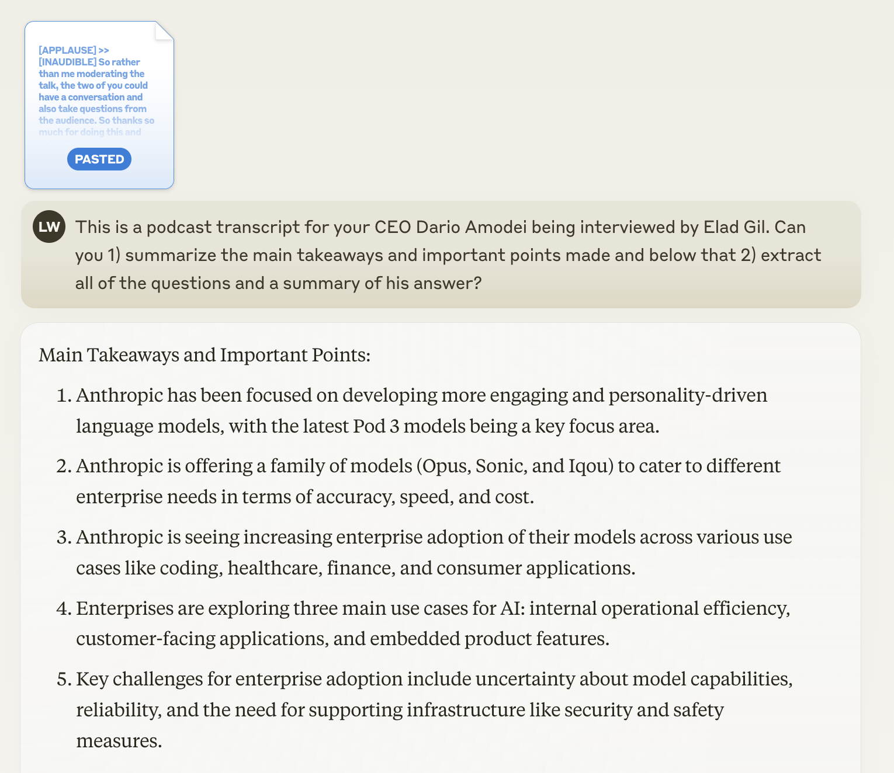

Dario Amodei & Elad Gil
At Google Cloud Next 2024, Elad Gil interviewed Dario Amodei, the CEO of Anthropic. I recorded the talk (really bad audio) and transcribed it using a whisper (small-en) model. I passed the transcription to Claude 3 (Haiku) to summarize it with this prompt:
This is a podcast transcript for your CEO Dario Amodei being interviewed by Elad Gil. Can you 1) summarize the main takeaways and important points made and below that 2) extract all of the questions and a summary of his answer?
The result is pretty good. Some of the issues are coming from whisper mis-transcribing “Haiku” as “Iqou”, “Sonnet” as “Sonic” etc. If every conference talk had this type of summary, that would be so valuable.

Claude 3’s full answer below (had to do some formatting though because the bullets/numbering didn’t copy over to Quarto and it wasn’t following my instructions to produce markdown):
Main Takeaways and Important Points:
- Anthropic has been focused on developing more engaging and personality-driven language models, with the latest Pod 3 models being a key focus area.
- Anthropic is offering a family of models (Opus, Sonic, and Iqou) to cater to different enterprise needs in terms of accuracy, speed, and cost.
- Anthropic is seeing increasing enterprise adoption of their models across various use cases like coding, healthcare, finance, and consumer applications.
- Enterprises are exploring three main use cases for AI: internal operational efficiency, customer-facing applications, and embedded product features.
- Key challenges for enterprise adoption include uncertainty about model capabilities, reliability, and the need for supporting infrastructure like security and safety measures.
- Anthropic is partnering with GCP to provide a secure and reliable platform for deploying their models in enterprise settings.
- Anthropic is excited about the potential of language models to accelerate progress in areas like healthcare, biology, and education, but also cautious about the risks as models become more autonomous and capable. Anthropic’s long-term vision is for their models to act as “coworkers” that can be deeply integrated with enterprise systems and data to enhance productivity and decision-making.
Questions and Answers:
What are the key features and capabilities of the Pod 3 models?
Focus on improving the personality and engagement of the models, as well as offering a family of models (Opus, Sonic, Iqou) with different trade-offs in terms of accuracy, speed, and cost.
How is Anthropic thinking about the cost and performance improvements in training and inference for their models?
Anthropic is seeing exponential improvements in cost-performance, with 1.5-2x annual decreases in the cost of compute and algorithmic improvements, but overall spending on training is still increasing due to the high value of these models.
What are the key enterprise use cases Anthropic is seeing for their models? Coding, healthcare, finance, and consumer internet applications are some of the key areas where enterprises are adopting Anthropic’s models.
How are enterprises thinking about using AI in terms of internal tools, customer-facing applications, and embedding in products?
Enterprises are exploring all three of these use cases, with the type of model used varying based on the specific needs (e.g., smaller models for customer-facing, larger models for internal analysis).
What are some of the key obstacles Anthropic sees for enterprise adoption of AI models?
Uncertainty about model capabilities, reliability, and the need for supporting infrastructure like security and safety measures.
How is Anthropic approaching safety and reliability in the context of their models?
Anthropic has a strong focus on reducing model mistakes and biases, and is working to build the necessary infrastructure (e.g., with GCP) to enable secure and reliable deployment of their models.
What are Anthropic’s thoughts on the potential of AI to accelerate progress in areas like healthcare and biology?
Anthropic is excited about the potential for AI to help overcome the limitations of human cognition and accelerate breakthroughs in complex domains like biology and medicine.
How is Anthropic thinking about the longer-term evolution of AI models, including the role of agents and autonomous systems?
Anthropic envisions a future where their models can act as “coworkers” that are deeply integrated with enterprise systems and data to enhance productivity and decision-making, but also acknowledges the challenges and risks that come with increasingly autonomous AI systems.